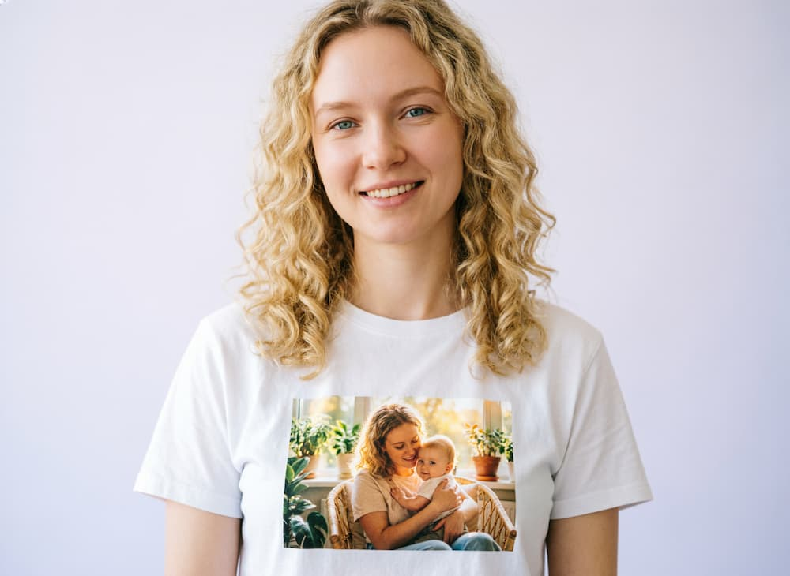
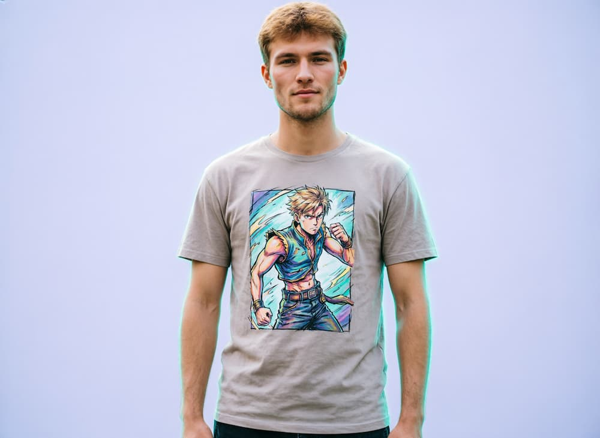
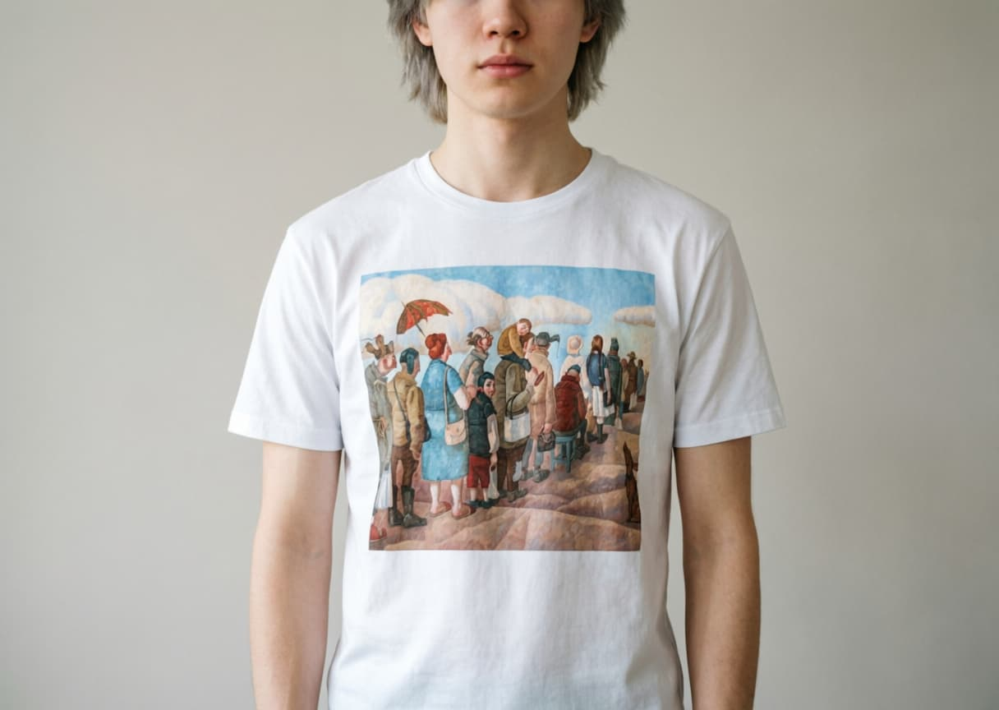
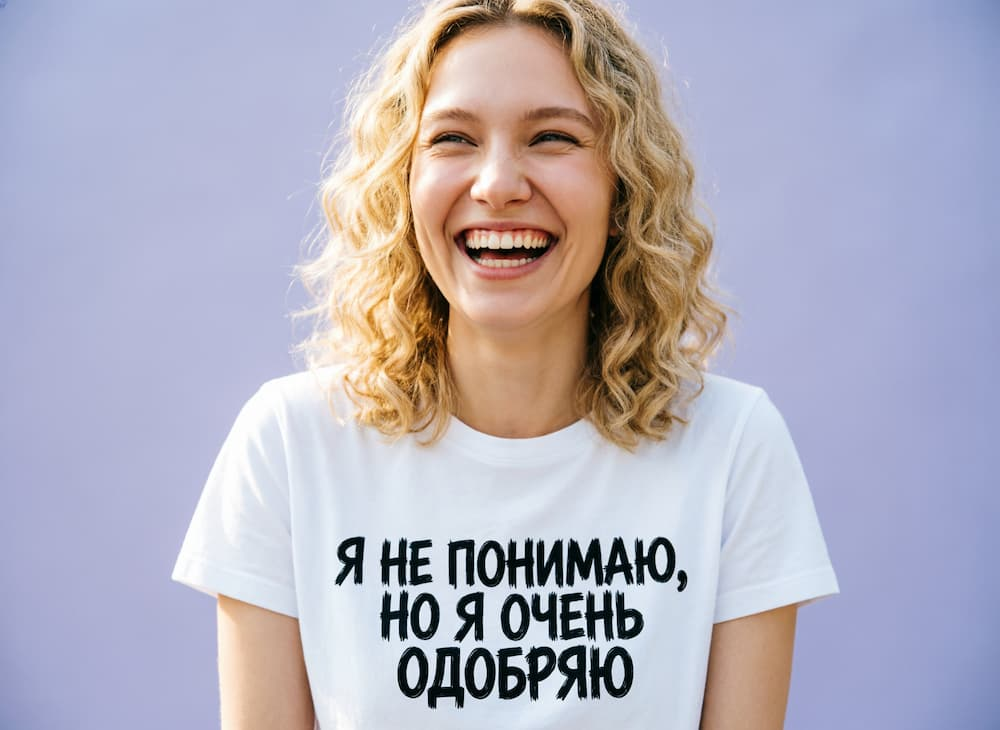
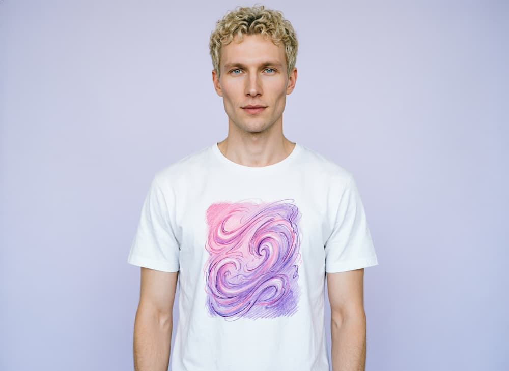
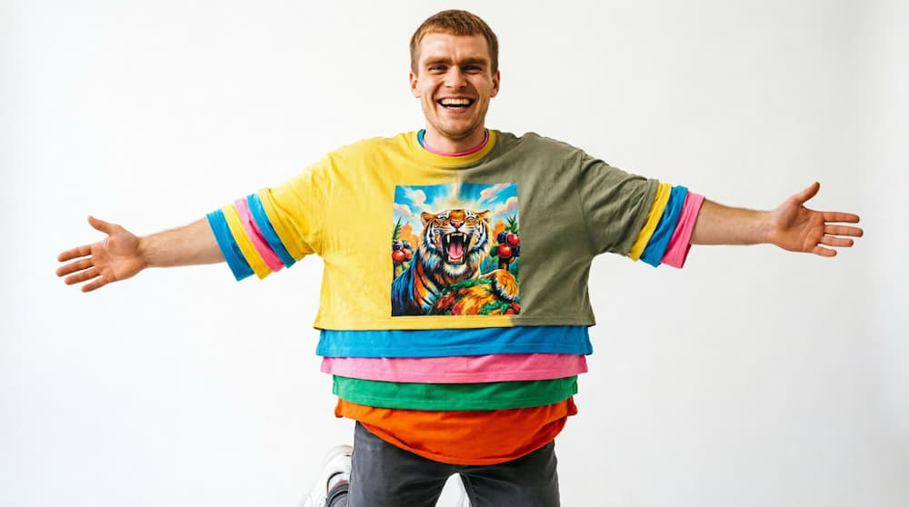

Свой принт, своя история: «Лазурь» запустила онлайн-конструктор футболок
 Такие футболки теперь можно собрать самому — на
lazur-wear.ru
Такие футболки теперь можно собрать самому — на
lazur-wear.ru
Мы много лет печатаем для клиентов буклеты, открытки и упаковку — а теперь напечатаем и то, что можно надеть. Мы запустили lazur-wear.ru — сайт-конструктор, где каждый может собрать футболку под себя: свой цвет, свой размер, свой принт — и заказать её онлайн, не выходя из дома.
Идея выросла из недавней покупки: мы взяли новое оборудование для печати на футболках и решили не останавливаться на корпоративных заказах, а сделать сервис, которым может воспользоваться каждый.

Как это работает
Заходите на lazur-wear.ru, выбираете модель футболки, цвет и размер, загружаете свою картинку или добавляете текст — логотип компании, кадр из отпуска, любимый мем, рисунок ребёнка. Тут же на экране видно, как принт ляжет спереди и со спины на модели, так что сюрпризов при получении не будет. Дальше — оформление заказа и оплата онлайн: печатаем и отправляем мы сами, на собственном оборудовании, без посредников.

Свой рисунок — или уже готовый, от художника
Если своей картинки под рукой нет — это не проблема. В конструкторе есть и готовые шаблоны, и это не безликий стоковый клипарт: почти все они — работы художников, с которыми у типографии заключены контракты. Тех же самых авторов, чьи картины каждый год становятся баннером-очередью у входа в «Лазурь» — часть их творчества теперь можно выбрать как готовый принт. Понравилась работа — печатаем её на футболке, без необходимости придумывать дизайн с нуля.

Один из готовых шаблонов — по мотивам картины художника, чьи работы становятся баннером у входа в «Лазурь»Не только футболки — и не только наши
Принт не привязан ни к конкретной модели одежды, ни к тому, что футболка обязательно должна быть куплена у нас. Точно так же мы наносим рисунок на джинсовку, шопер, зонт или бейсболку — свою или принесённую вами. Хочется собрать целый комплект в одном стиле — не вопрос: одна и та же картинка ляжет и на футболку, и на кепку, и на шопер, и на зонт, чтобы весь образ смотрелся цельно, а не случайным набором вещей. А можно и наоборот — на каждую вещь свой рисунок: разный принт на футболке, джинсовке, зонте и так далее. Одна картинка на все вещи — это опция, а не обязательное условие.
Кому пригодится
Частным клиентам — сделать подарок, футболку на девичник, день рождения или семейную поездку. Бизнесу — мерч для команды, промо-футболки на выставку, спецодежда с логотипом для сотрудников. Один заказ — хоть одна футболка, хоть сто.

Кстати, у футболки — чисто российская биография, прямо в названии. В начале XX века в России в такой трикотажной рубашке выходили на поле футболисты — отсюда и «футболка», в отличие от большинства языков, где прижилось нейтральное «T-shirt». Со временем футбольная форма перекочевала с поля во двор и стала повседневной одеждой, а к 70–80-м на неё уже наносили что угодно — от рок-групп до капустников и институтских эмблем. Мы просто продолжаем эту традицию — разве что вместо трафарета теперь цифровая печать.

И ещё один факт напоследок, для улыбки. В мире официально фиксируют рекорды Гиннесса на одновременное ношение футболок — рекордсмены умудряются натянуть на себя далеко за сотню маек одну поверх другой, пока не начинают напоминать нарядного капустного кочана. Так что если вдруг решите повторить — знайте: наши футболки для этого не предназначены. Они созданы для того, чтобы их носили по одной, а принт был виден целиком, а не погребён где-то под девяносто девятым слоем.

Так делать не надо — мы за то, чтобы принт был виден целикомХотите такую же историю на своей футболке?
Попробовать конструктор →